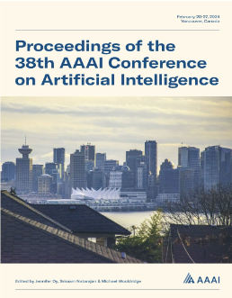

Awards
1st Place Prize at the 2024 Graduate CIC Student Paper Challenge
Accepted through the Covid Information Commons Paper Challenge. Recipient: Md Khairul Islam
Third Place prize in the 2023 IEEE ICDH Conference
Accepted to the IEEE ICDH Conference; Awarded 3rd place. Recipient: Md Khairul Islam

Md Khairul Islam
CS (PhD)

Temporal Dependencies and Spatio-Temporal Patterns of Time Series Models
Accepted through the AAAI Doctoral Consortium Track. Recipient: Md Khairul Islam
Validation, Robustness, and Accuracy of Perturbation-Based Sensitivity Analysis Methods
Accepted through the AAAI Undergraduate Consortium. Recipient: Zhengguang Wang
Interpreting County-Level COVID-19 Infections in IEEE Library
Accepted to the 2023 IEEE ICDH Conference and archived in IEEE Xplore.